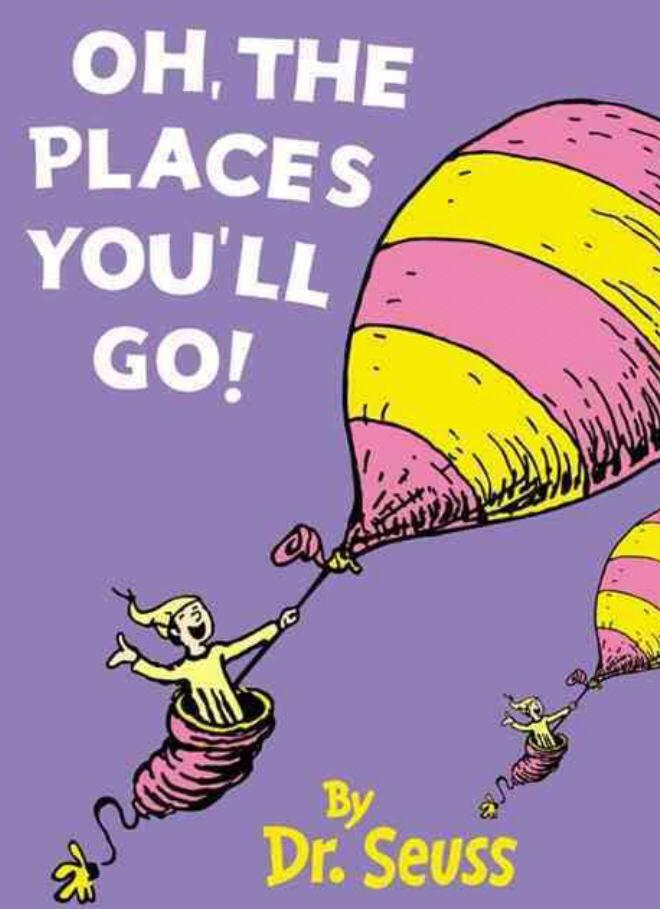
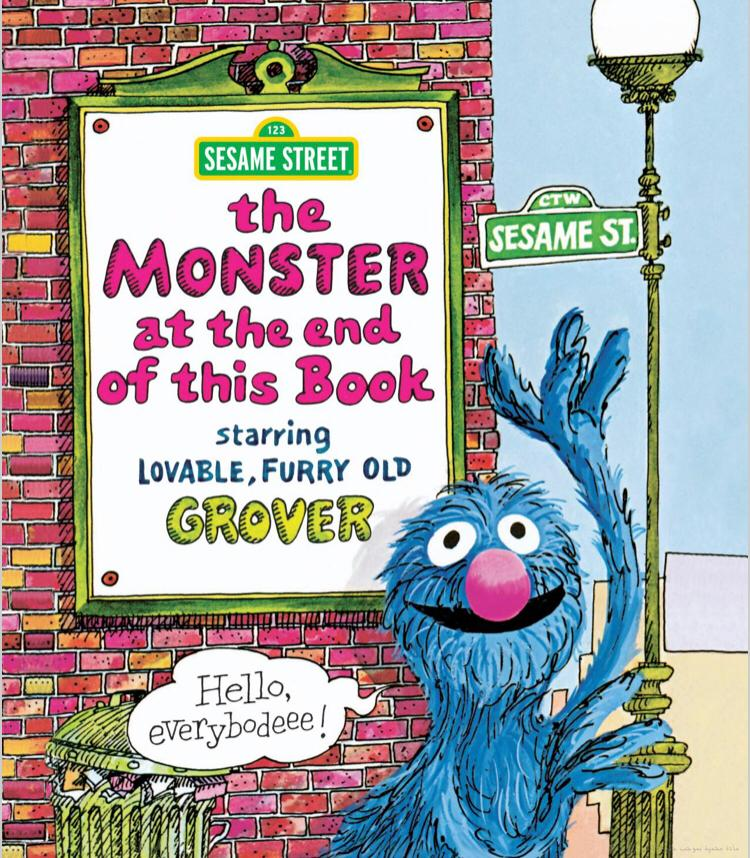
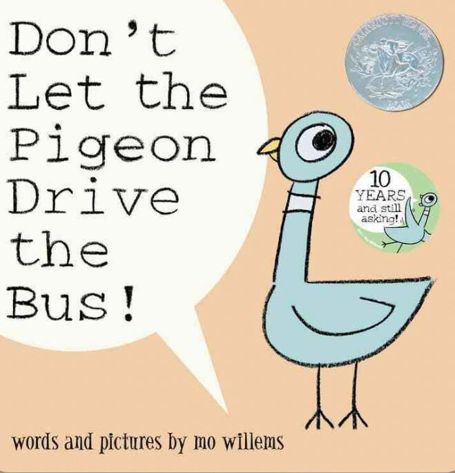
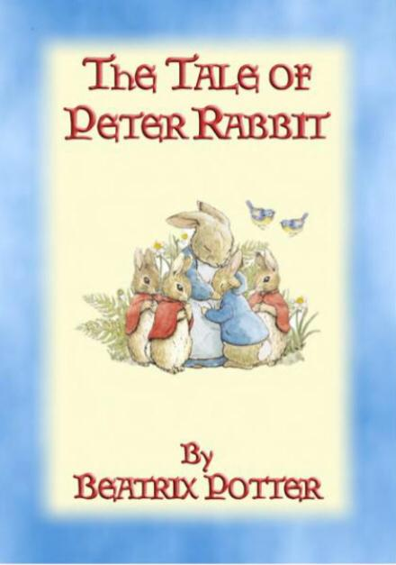
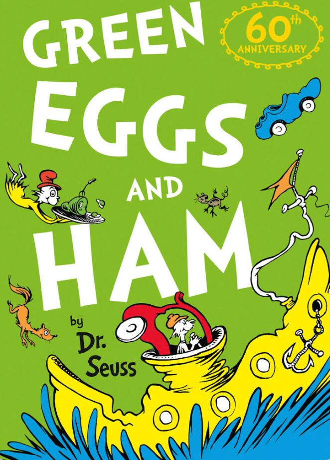
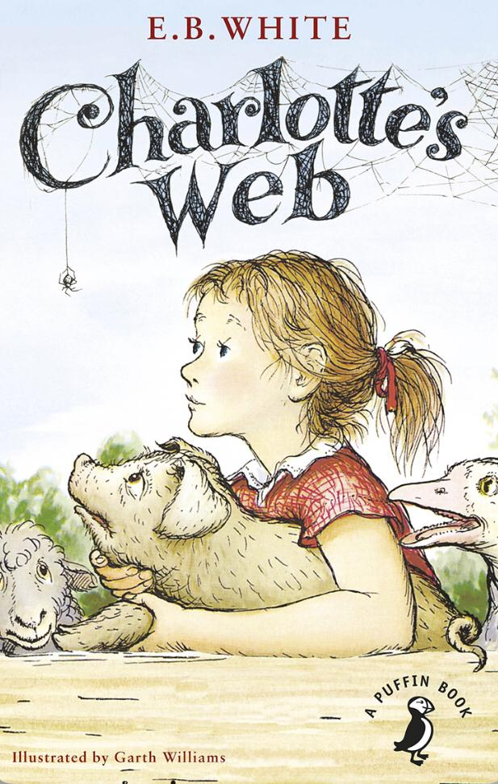
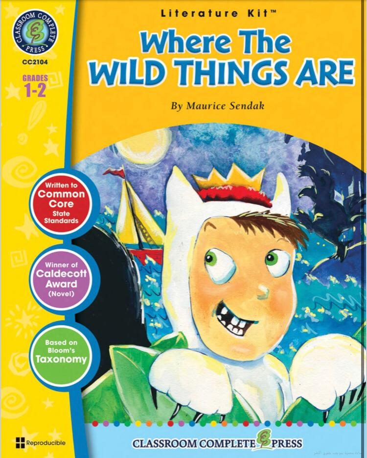
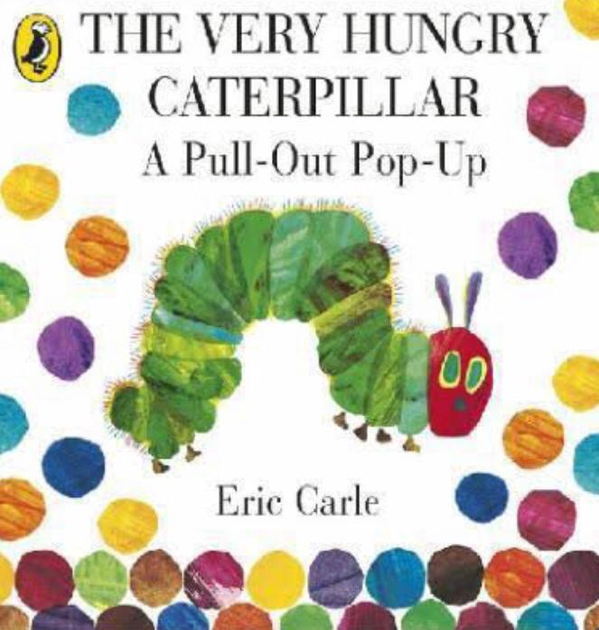
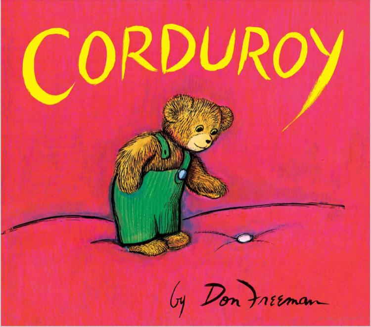

|  |  |  |
|
The story begins with the narrator, relating the decision of the unnamed protagonist (who represents the reader) to leave town. The protagonist travels through several geometrical and a place simply called "The Waiting Place", which is ominously polychromatic landscapes and places, eventually encountering addressed as being a place where everyone is always waiting for something to happen. |
The story begins with the narrator, relating the decision of the unnamed protagonist (who represents the reader) to leave town. The protagonist travels through several geometrical and a place simply called "The Waiting Place", which is ominously polychromatic landscapes and places, eventually encountering addressed as being a place where everyone is always waiting for something to happen. |
The story begins with the narrator, relating the decision of the unnamed protagonist (who represents the reader) to leave town. The protagonist travels through several geometrical and a place simply called "The Waiting Place", which is ominously polychromatic landscapes and places, eventually encountering addressed as being a place where everyone is always waiting for something to happen. |
|  |  |  |
|
The story focuses on a family of anthropomorphic rabbits. The widowed mother rabbit warns her four rabbit children, Flopsy, Mopsy, Cottontail, and Peter (the youngest rabbit child) not to enter the vegetable garden of a man named Mr. McGregor, whose wife, she tells them, put their father in a pie after he entered. |
Sam-I-Am frequently pesters an unnamed character, who has developed a dislike for Sam. One day, Sam offers him a dish called "Green Eggs and Ham", but the other character tells him that he does not like it by saying "I do not like green eggs and ham. I do not like them, Sam-I-Am" |
After a little girl named Fern Arable pleads for the life of the runt of a litter of piglets, her father gives her the pig to nurture, and she names him Wilbur. She treats him as a pet, but a month later, Wilbur is no longer small, and is sold to Fern's uncle, Homer Zuckerman. |
|  |  |  |
|
This story of only 338 words focuses on a young boy named Max who, after dressing in his wolf costume, wreaks such havoc through his household that he is sent to bed without his supper. Max's bedroom undergoes a mysterious transformation into a jungle environment, and he winds up sailing to an island inhabited by malicious beasts known as the "Wild Things." |
A small caterpillar emerges from an egg and begins eating everything in sight. Finally, it is no longer hungry and no longer small. The big, fat caterpillar builds a cocoon around himself and finally emerges as a beautiful butterfly |
The book tells the story of a teddy bear named Corduroy, displayed on a toy shelf in a department store. One day, a young girl named Lisa arrives at the store with her mother and spots the bear. She is eager to buy him, but her mother refuses to spend more money and notices a button is missing from his overalls. |